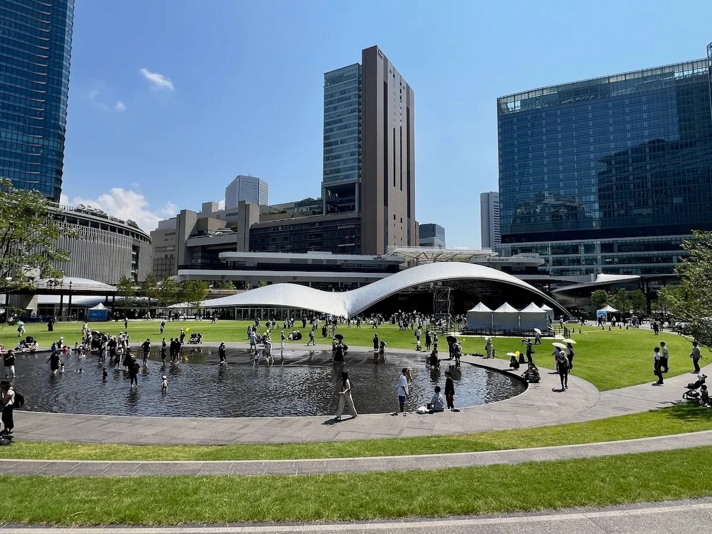
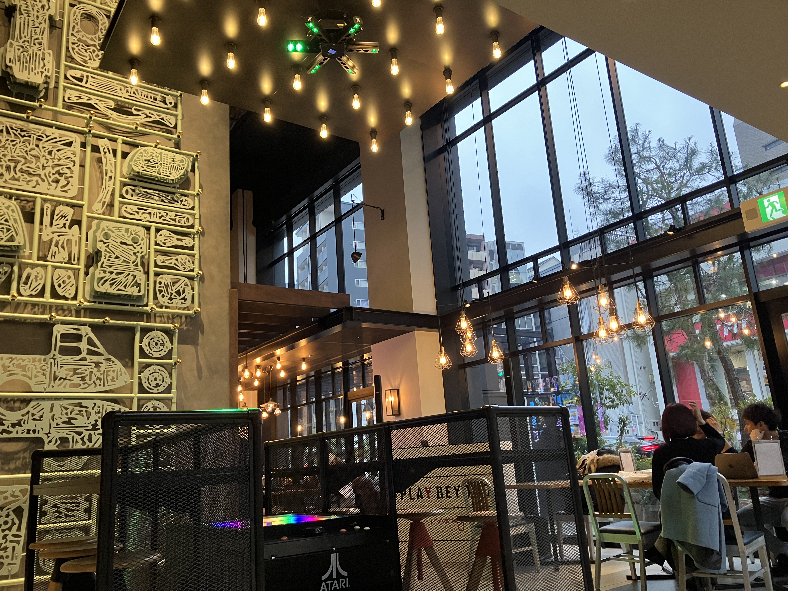

新たな施設が続々とOPTENする梅田エリア。その中でもデートに使えるおすすめスポット５選を紹介します。
1. Bar Moxy（モクシー大阪梅田 1F）

モクシー大阪梅田ホテル内1Fに位置するカフェバー
開放的な空間にPOPな音楽がマッチする空間に、ソファ席やテーブル席など
おしゃれなホッケーゲームもあり、気分転換のコンテンツは充実
グラングリーンより徒歩１０分ほどでの距離にあり、天気の良い日は梅田駅から散歩するにはちょうどよい
ぜひ休日に行ってみてはどうか